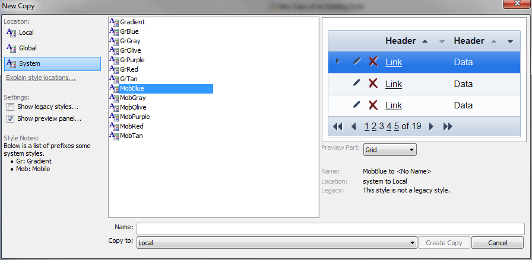
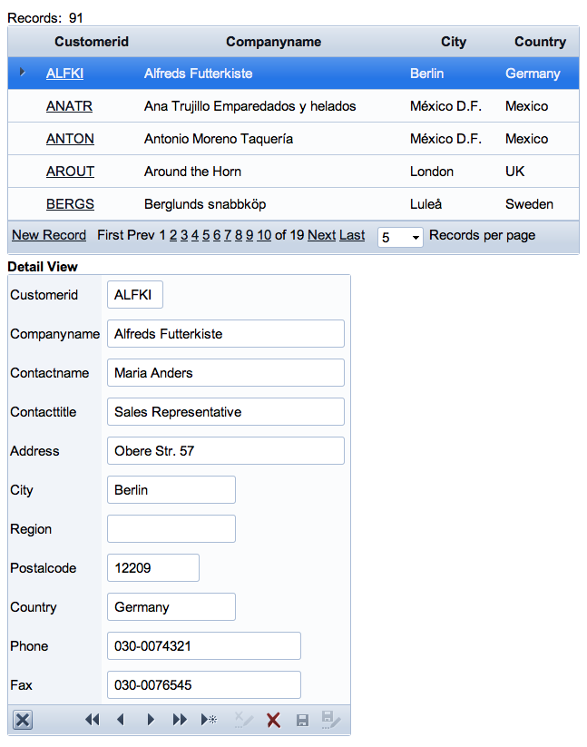

Grid Mobile Styles
System styles starting with Mob are intended for mobile use. The following image shows the Grid section of the style preview for Mobile Blue. Note how large the mobile icons are compared to the desktop page of the builder. The mobile icons sets conform to Apple's guidelines for iPhone icons. (Hover over the image to see it full size.)
The following image shows a grid with the Mobile Blue style running in Safari.
